参考答案
第1讲 集合的概念与运算
1 ｛－3，－1，1，5｝ 2 不存在 3 （p，q）＝（－8，16）、（－20，100）、（－14，40）或（p，q）为满足p2 ＜4q的实数对 4 （-∞，－1］∪［1，+∞） 5 A B 6 0 7 A∩B＝B，CI A∪B＝｛（x，y）｜x，y∈R，且（x，y）≠（2，4）｝ 8 44 9 22006 －1 10 证明略 11 （1）a＝0或1（2）a＝－1±
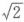
12 ｛1，3，4，9，10｝ 13 1667 14 871 15 910 16 按照T中元素的个数进行如下讨论：｜T｜＝2时，这样的T只有1个；｜T｜＝3时，这样的T有6个；｜T｜＝4时，这样的T有9个；｜T｜＝5时，这样的T有6个；｜T｜＝6时，这样的T有6个；｜T｜＝7时，不存在；｜T｜＝8时，只有1个．第2讲 有限集元素的数目
1（1）f：a1 →b1 ，a2 →b2 ，a3 →b3 ，个数为4×3×2＝24 （2）f：a1 →b1 ，a2 →b1 ，a3 →b1 ，个数为43 －4×3×2＝40 （3）不存在A到B上的满射 2 33 ＝27 3 a＝ 或2＋ 4 1895 5 76 6 448 7 5 8 ｜A∩B｜＝167 9 5050·299 10 1870 11 14 12 略 13 4 14 175 15 75 16 13
第3讲 二次函数
1（1）
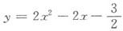
（2）13 （3）［5，10］ （4）0 （5）7 2 y＝x2 －4x＋2或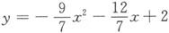
3 （1）略 （2）8 4 （4，33） 5 1≤a≤2 6 a＝2，b＝3 7 ［1，3］或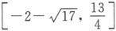
8 （1）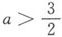
（2）（1，+∞） 9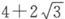
10 （－2，－1）∪（3，4） 11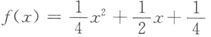
12 （1）略 （2）略 13 －1≤a－2b≤5 14 略 15 （1）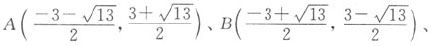
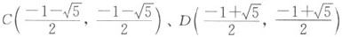
（2）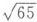
16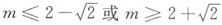
第4讲 函数的图像和性质
1
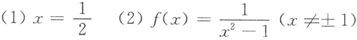
（3）y＝-φ（-x）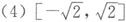
2 ［35，+∞） 3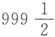
4 0＜m＜1 5 561 6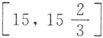
7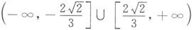
8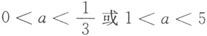
9 18 10 （-∞，－2］∪［2，+∞） 11 k＜1 12 （1）证明略 （2）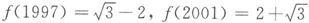
13 y＝±x，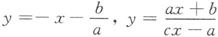
14 证明略 15 （-∞，－9］∪［4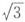
－3，+∞） 16 （1）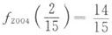
（2）证明略第5讲 幂函数、指数函数、对数函数
1 （1）10 （2）2 （3）x＝2 （4）290 －1 （5）3 （6）－3≤m＜0 2 ［0，1］ 3 0＜a＜1 4 1－a 5
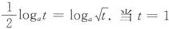
时，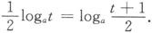
当t≠1时，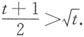
若0＜a＜1，则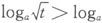
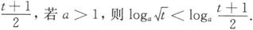
6 210 7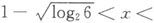
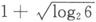
8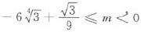
9 最大值为2，最小值为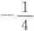
10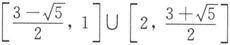
11 （-∞，－1）∪（0，1） 12 当n是奇数时，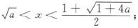
当n是偶数时，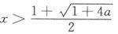
13 a＝2 14 lg2 15 证明略第6讲 含绝对值的函数
1 图像如图所示 2 C 3 函数的图象如图所示 4 两个
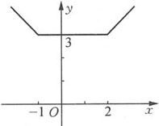
（第1题）
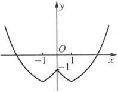
（第3题）
5
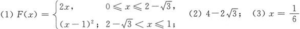
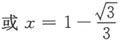
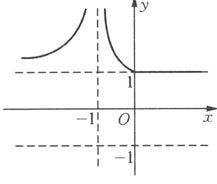
（第6题）
6 （1）图像如图所示 （2）当a＜0时，方程无解；当a＝0或1＜a＜3时，方程有四个解；当0＜a＜1时，方程有八个解；当a＝1时，方程有六个解；当a＝3时，方程有三个解；当a3时，方程有两个解 7 f（x）的最小值为0．当a∈（－2，0］时，f（x）的最大值为
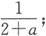
当a∈（0，2）时，f（x）的最大值为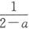
8 a＝10 9 M的最小值是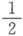
第7讲 函数的最大值和最小值
1 （1）211 （2）10 （3）
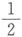
（4）16 （5）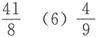
2 ymin＝1 3 2 4 ymin＝4，ymax＝5045 5 当x＝±3时，y取最小值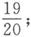
当x＝0时，y取最大值5 6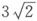
7 最小值为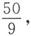
最大值为18 8 18 9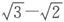
10 2 11 a＝±4，b＝3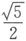
13 2 14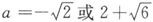
15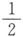
16 17 18 a＝－8时，l（a）取到最大值 19 S的最大值为1；S的最小值为 20 （1）证明略 （2）g（t）的最小值为4第8讲 等差数列与等比数列
1 C 2 C 3 C 4 B 5 M＝N 6 6 7 2 8 an ＝1或 9 证明略 10 证明略 11 an ≤bn 12 由a1 ＋a2 ＋…＋an 形成的质数为3、5、11、61、67、73、79共7个 13 证明略 14证明略 15 16 证明略
第9讲 高阶等差数列
1 D 2 C 4 n（n＋1）（n＋2）（n＋3）（n＋4） 5 6 7 8 an ＝n3 9 证明略 10 11 a1m ＝m2 ＋m－1，a1n ＝n2 －n＋1 12 13
第10讲 数列求和
1 C 2 D 3 B 4 B 5 D 6 （n＋1）！－1 7 8 9 10 11 173 12 13 14 ［x］＝1998 15 401 16 17 证明略 18 证明略
第11讲 数列综合题
1 2 （1）an ＝22－2n，n＝1，2，3，… （2）an ＝12－n和an ＝13－n，n＝1，2，3，… 3 （1）an ＝2n －1（n∈N* ） （2）证明略 4 （1）an ＝6n－5（n∈N* ）（2）10 5 （1）an ＝8－2（n－1）＝10－2n （2）m的最大整数值是7 6 2 7 （1）略 （2） （3） 8 证明略 9 证明略 10 证明略
第12讲 三角函数的概念与性质
1 2 3 4 证明略 5 证明略 6 7 （1）证明略（2）c＞a＞b 8 证明略 9 证明略 10 11 r的最小值为 12 最小值为 在 时取到 13 f（x）是一个以2为最小正周期的函数 14 证明略 15 证明略
第13讲 三角恒等变形
1 （1）1 （2）0 （3）0 2 （1）1 （2） （4）222 3 4 5 6 －3 7 α＝5°或者10°8 证明略 9 证明略 10 证明略 11 证明略 12 证明略 13 证明略 14 记
第14讲 三角不等式
1 2 证明略 3 α＞β 4 证明略 5 证明略 6 证明略 7 证明略 8 证明略 9 证明略 10 证明略 11 12 证明略 13 证明略 14 证明略
第15讲 三角函数的最大值和最小值问题
1 2 9 3 1 4 cosx＋cosy的最大值和最小值分别为 和－ 5 1 6 7 8 最大值和最小值分 9 f（x）的最大值为 最小值为 10 11 当且仅当A＝B＝0时，F（x）的最大值M取得最小值 12 13 14
第16讲 反三角函数
1 2 3 4 5 a的符号是负号，而b的符号为正号 6 7 x＝sin1时，ymin＝－3；x＝－1时， 8 反函数为 9 证明略
第17讲 三角方程
1 2 3 2 4 5 6 7 实数a的取值范围是｛a｜a＝0或｜a1≥2，a∈R｝ 8 sinα＋sin2α－sin4α∈｛0，±1｝ 9 10 11 12 或 其中k1 、k2 、k3 、k4 为任意整数 13 2对 14 6 15 证明略 16 2n－2 ＋1
第18讲 正弦定理与余弦定理
1 观察者在离墙距离为 米时，视角最大 2 3 A＝60° 4 A＝120° 5 6 1 7 略 8 略 9 略 10 略 11 略 12 略 13 略 14 略 15 略 16 略
第19讲 向量的概念与运算
1 120°2 60°3 19 4 0 5 证明略 6 ABCD为矩形 7 8 证明略 9 证明略 10 证明略 11 证明略 12 证明略
第20讲 集合的分划
1 略 2 略 3 所求最小正整数h（n）＝2n 4 n＝96 5 存在 6 最多可以选出两个集合 7 略 8 略 9 所有符合要求的分划数为2n－1 种 10 略
第21讲 二次函数综合题
1 2 b＝0，c＝－4 3 证明略 4 证明略 5 0＜a＜1 6 1≤a≤9 7 π 8 （1）－4≤m≤2 （2）最小值是 最大值为101 9 证明略 10 若AC＝BC，则 若AC＝AB，则y＝ 若AB＝BC，则 ＋4 11 整点为（－6，6）、（－3，3）、（2，2）、（4，3）、（7，6）、（9，9） 12 （1）f（x）＝（x－2k）2 （2） 13 11 14 amin ＝5 15 证明略 16 证明略
第22讲 离散量的最大值与最小值
1 k的最小值为51 2 （2×3×…×8）×（10×11×…×20） 3 97 4 24 5 最小的k＝5 6 16 7 体育馆最少要安排12个横排 8 M最多有10个元素 9 11 10 2 11 略 12 13 其中 14 这里r1 ＝2，r2 ＝3，ri ＝r1 r2 …ri－1 ＋1，i＝2，3，…，n
第23讲 简单的函数迭代和函数方程
1 符合要求的（a，b）对构成的集合为｛（a，b）｜0≤a≤4，b＝0｝ 2 证明略 3 4 5 ｛1，2，3｝ 6 当n∈N* 时，Pn （x）＝0的根为 7 证明略 8 9 f（x）＝1，x∈R 10 f（x）＝x＋1 11 50 12 f（x）＝x 13 14 f（x）＝x＋1 15 证明略
第24讲 构造函数解题
1 略 2 略 3［－1，5］ 4 略 5 略 6 0 7 略 8 略 9 略 10 略 11 存在 12 略 13 略14 略 15 略
第25讲 向量与几何
1 略 2 略 3 略 4 略 5 略 6 略 7 略 8 存在 9 略 10 略
第26讲 常系数线性递推数列
1 an ＝－2×3n＋1 ＋3×7n 2 an ＝（2－n）×3n 3 4 an ＝2n ＋n！ 5 an ＝2n－1 6 748 7 略 8 略 9 略 10 11 a1 ＝a2 ＝…＝2 12 略 13 略 14 该数列不能是有界数列
第27讲 递推数列与递推方法
1 当n＝2009或2010时，an 取最大值 2 证明略 3 4 证明略 5 证明略 6 证明略 7 证明略 8 －1 9 略 10 略 11 略 12 略
第28讲 周期数列
1 1005 2 4 3 －1 4 以3为周期的数列 5 不是周期数列 6 略 7 169 8 不存在 9 略 10 p－1 11 略 12 略 13 略
第29讲 抽屉原理
1 略 2 略 3 略 4 n的最大值是98 5 略 6 略 7 略 8 略 9 略 10 略 11 略
第30讲 极端原理
1 证明略 2 证明略 3 证明略 4 证明略 5 证明略 6 证明略 7 证明略 8 证明略 9 证明略 10 证明略 11 证明略